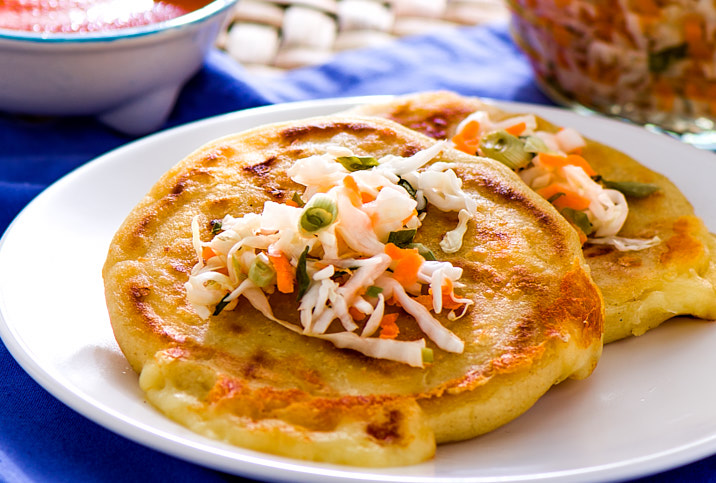

Recipes

What Are Pupusas?
Pupusas are a classic dish origination from El Salvador. Your typical pupusa usually contains cheese and beans, but more ingredients can be added to your liking. They are usually acommpanied by salsa and curtido.
Ingredients
- Masa
- Cheese
- Beans
- Choice of Meat
- Curtido
- Salsa
Steps
- Use the masa to create the shape of a pupusa
- Add the cheese, beans, and meat on top of the pupusa
- Fold over the ingredients like a pancake
- Cook on stove for 5 minutes, while flipping over after 2.5 minutes
- Add your curtido and salsa and enjoy!